Introduction
One of the first things you will want to do after you have become
familiar with T3D is to change the player character model. This can
simply be achieved by using Torque 3D's powerful World Editor and its provided
game editing tool set.
(click to enlarge)
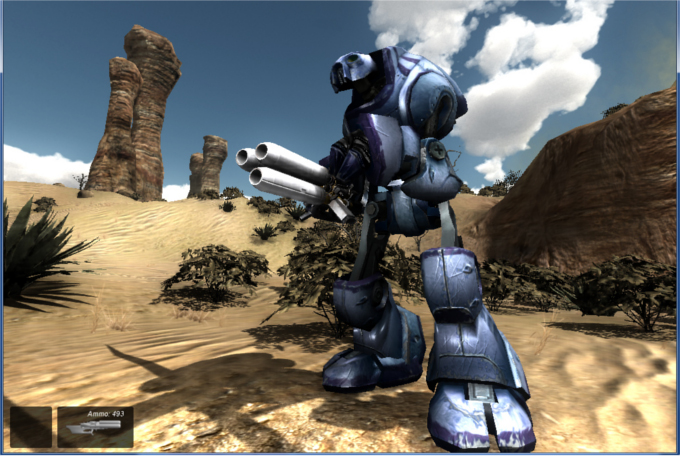
In this Tutorial we are going to take a step by step look at how to
change the default player character from the Gideon model to the BoomBot
model. These steps can then be easily applied to your own rigged
character model for use in your T3D project. We will explore how to
change the players characteristics through the use of the datablock
properties and how to spawn this new player into the game , and all this
can be done without touching any scripting thanks to T3D's great game
editing WYSIWYG tool set.
Topics we will look at in this tutorial:
- Create a new Player Datablock
- Changing the player model
- Changing Player properties
- Spawning a new player
Setup
We will start off by opening the Deathball Desert Torque 3D project from the provided toolbox, but first I would advise you to back up this example project.
1) The example project is located in the Torque 3D Pro 1.1 \Examples folder. Make a backup copy of the FPS Example folder by copying it to a backup folder.
2) Launch the T3D tool box.
(click to enlarge)
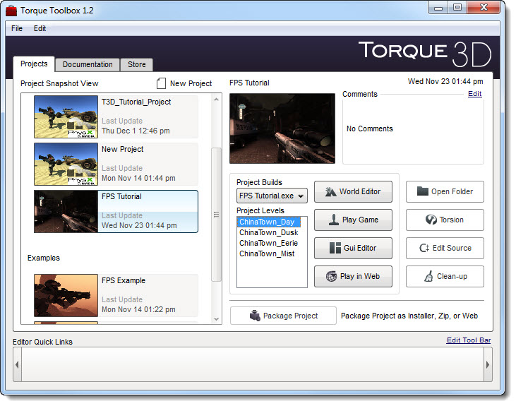
3) Select the Deathball Desert game
(click to enlarge)
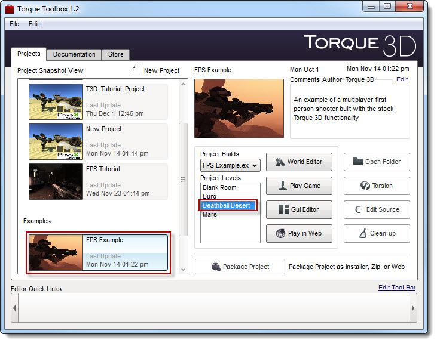
4) Press the world edit button, this will launch the selected game for you with an open world editor.
(click to enlarge)
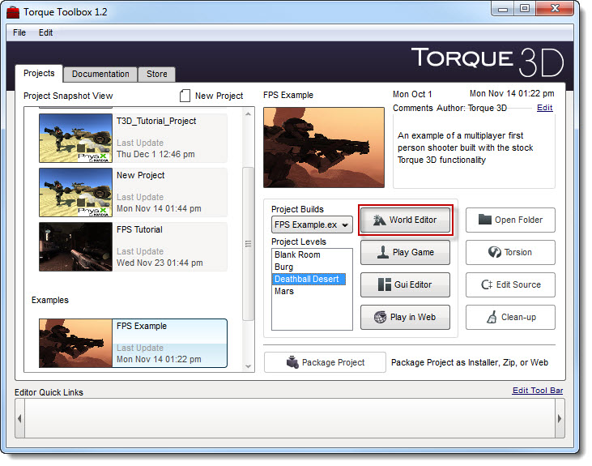
HINT: If you are new to T3D, you can open the World Editor by toggling the F11 key from any game mode.
(click to enlarge)
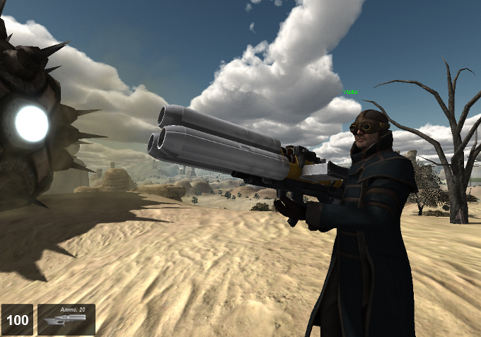
The Datablock Editor
T3D's world editor provides a Datablock editor for changing the
behaviours of certain in game assets, and our player character has such a
Datablock.
For more information on the Datablock editor, please refer to the Datablock Editor section in the T3D main document.
1) First we need to open the Datablock Editor, from within the World Editor press the Datablock Editor icon in the main toolbar.
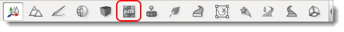
2) The datablock editor has 2 main parts, the Datablock library and the datablock properties.
(click to enlarge)
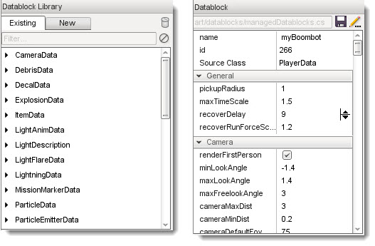
Player Datablock
1) At the top of the editor there is the option for creating a new Datablock, select the new tab
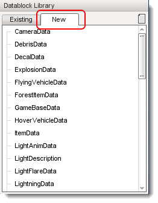
2) As we want to create a new player character, we must first select the PlayerData datablock type then press the "create new datablock" icon in the upper right hand corner of this list.
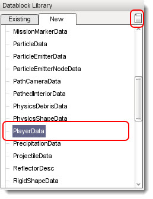
3) This will open a small panel, where we can name our new
datablock and choose to copy data from any of the pre-made PlayerData
blocks. These pre-made data templates will save you a lot of set up time
when dealing with larger projects, providing consistent repeatable
traits to any in game object.
Name our new DataBlock; myBoombot and from the dropdown select DefaultPlayerData
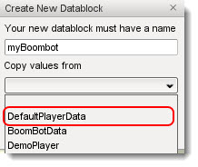
When you have made the selection press the Create button.
4) Select the "Existing" Tab in the DataBlock editor to return to the main list. You will notice our new datablock myBoombot Is now part of the PlayerData section.
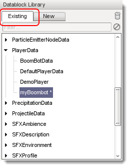
NOTE: The little asterisk next to our datablock lets you know this datablock has not yet been saved.
5) Saving our new datablock is easily done by pressing the save icon beneath this list, press the save icon to make a save.
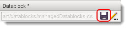
Player Properties
We have created our character datablock and saved it, now it is time
to give our new datablock some customizing so we have a unique
character.
The datablock Editor provides a property panel where we can
change many different parameters to shape the way our character will
perform. If you scroll through the property panel you will see the many
available parameters that can be changed.
(click to enlarge)
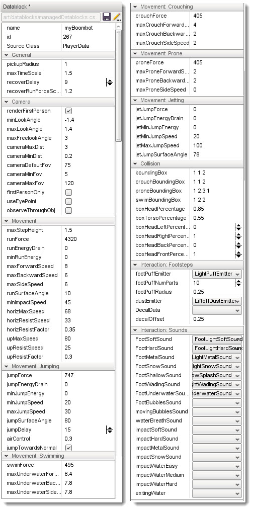
(click to enlarge)

As you can see from the above images, T3D provides a vast array of parameters for you to customize your characters.
NOTE: The new Character datablock will not take effect until we edit the spawning point and restart the mission.
Change the Character Model
We are going to make a few changes to the player properties but it
would be great to get instant feedback as we make these changes. To do
this our game needs to reference our new player datablock when the
player is spawned.
Before we continue with the spawning, we need to make one quick edit; Change the mesh to the Boombot model.
1) With myBoombot datablock selected in the datablock list, scroll down through the properties until you find the Render section.
Change the shapeFile property to point to the location of the Boombot model.
Click on the [...] button to open the file browser.
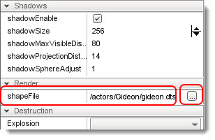
Locate the file FPS Example\game\art\shapes\actors\BoomBot\BoomBot.dts and press Ok
2) Now we have a new mesh press the save datablock button
3) Next make a save of the level by using the main menu File>SaveLevel
Spawning
Before we can play with our new character datablock, we need to make
it the current player. This is done by editing the spawn sphere so that
when the game loads it will spawn a player using our new datablock.
1) Select the Object editor icon from the main tool bar to open the scene tree.

2) Inside the PlayerDropPoints folder, delete all but the top spawn sphere.
HINT: To delete you can either use RMB context menu on the selected item or alternatively press the delete key.
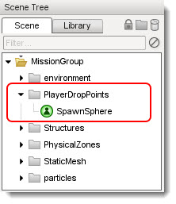
3) Select the remaining Spawn Sphere and in the properties, change the section Spawn>spawnDataBlock property to our new datablock; myBoombot
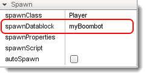
4) Make a save of the level.
5) Exit and re-open the level.
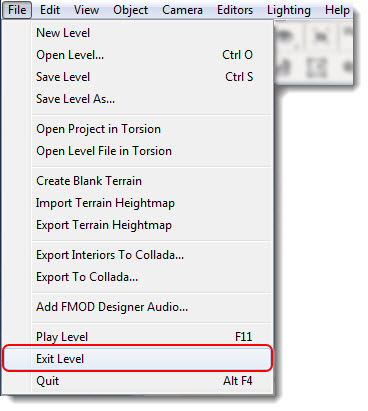
HINT: You can also exit the level by pressing the ESC key
6) Press Tab to go into 3rd person mode and you will see the Boombot model as your player character.
(click to enlarge)
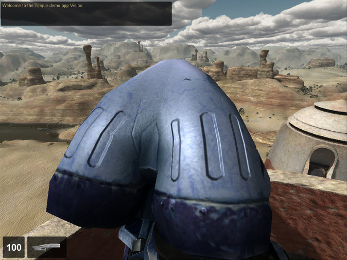
It is now time to make a few changes to our character. We want to give
our new character some enhanced performance, a faster movement speed, a
power jump and a better 3rd person camera view!
Customizing our Character
First we will change some of the camera settings.
1) Open the world editor if you have not done so already, press F11
2) Open the datablock editor and select our new datablock; myBoombot datablock from the library list.
Custom 3rd Person Camera
1) Set your camera mode to 3rd person mode.
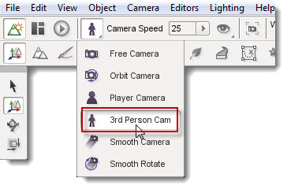
HINT: you can toggle the cameras in the world editing mode by pressing ALT + C
2) From the properties locate the camera section; here you will
find many parameters for changing the way the camera will perform whilst
using our myBoombot datablock. We want to move our camera further away
from the character and adjust the free look angle for use in the vanity
view.
Camera>cameraMaxDist to equal 5
Camera>maxFreelookAngle to equal 4
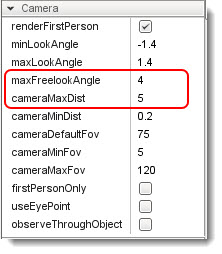
3) Make a save of the datablock by pressing the datablock save icon.
4) Try it now; press and hold the V key whilst moving the mouse view. Now when you move the camera it will orbit the player.
(click to enlarge)
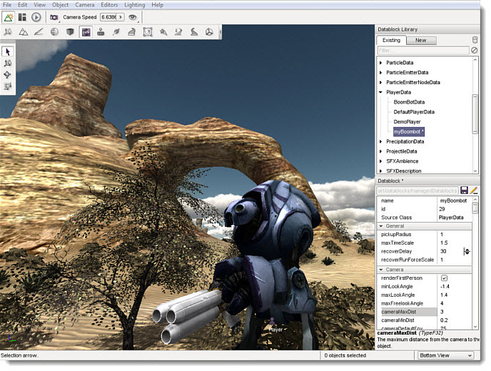
Power up our Character
Let us give our character a powerful jump and a faster movement speed.
1) Look in the myBoombot datablock properties for the Movement: Jumping section, and make the following changes:
JumpForce to equal 300
jumpDelay to equal 1
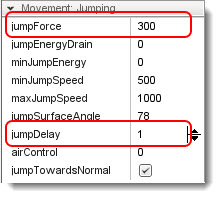
2) Make a save of the myBoombot datablock.
3) Try it now, Press the space bar to jump
4) You may notice that when we land from a jump we get the player
damaged, camera shake. To prevent the player from receiving damage
when jumping we need to edit the Interaction: Ground Impact section.
groundImpactMinSpeed to equal 200
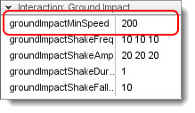
NOTE: this value will also affect any falling damage, not just from jumping.
5) Now time to give our character enhanced speed. Look for the Movement: section and make the following change:
Movement: maxForwardSpeed to equal 20
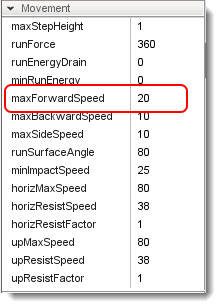
Activate Weapons
If you have tried to shoot using our new character, you will have
noticed that the weapons are not working. We need to provide myBoombot
with an inventory item; our weapon and some ammo.
1) Located at the bottom of the properties panel you will find
the Dynamic fields section. In this section we need to provide the
inventory weapon item property and the inventory ammo property.
The following image show the fields present in the default player datablock.
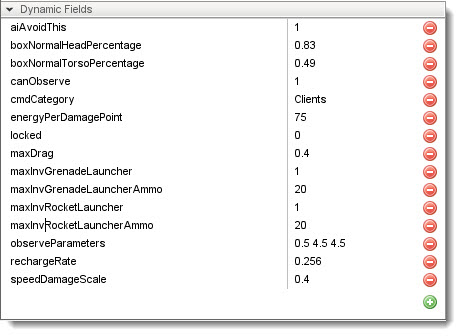
2) In the Dynamic Fields section, press the green plus icon to add a new field.
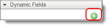
This adds an empty property field.
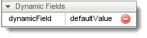
3) Add a second property field by pressing the plus button again and edit the contents to match the following image:
maxInvRocketLauncher to value 1
maxInvRocketLauncherAmmo to value 500
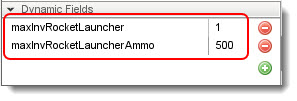
HINT: if you need to remove an entry press the delete entry icon
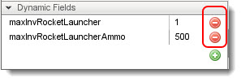
4) Make a save of myBoombot datablock and also make a save of the level.
5) To get the new dynamic fields up and running you will need to
close and re-open the level. Once you have loaded your level your player
character will be armed and dangerous.
(click to enlarge)
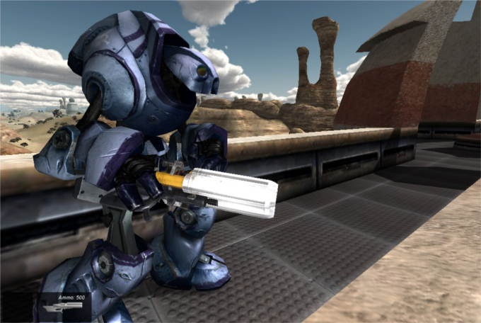
Conclusion
In this tutorial we have looked at each of the steps involved in
creating a new custom character, from how to change the mesh associated
with the custom datablock, to how this new datablock can be spawned as
the player character.
There are many available properties that have a direct effect
upon how the new character will interact with the game environment,
experiment and play with some of these other settings to learn how they
affect the player's abilities.
As always, remember to make regular saves and most of all have fun!
|
{kind=link}
{kind=link}
{kind=link}
{kind=link}
{kind=link}
{kind=link}
{kind=link}
{kind=link}
{kind=link}
{kind=link}